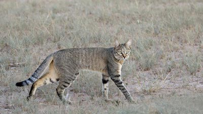
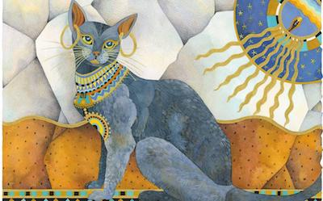
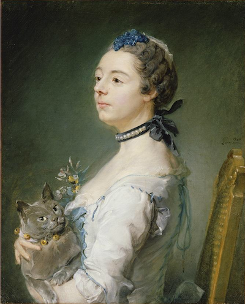

A Brief History of Cats
The wild cats of today, like Lions and Tigers, descended from early carnivores called miacids. From the miacids the modern wild cat developed into three main types; the European wild cat, the African wild cat and the Asiatic desert cat. Domestic cats are thought to have evolved from the African wild cat because of their tabby markings.
An African Wildcat
The cat was first domesticated around 4000 years ago. The Ancient Egyptians were the first people to keep cats as pets, mainly to help out with pest control. Cats in Egypt were worshipped along with their gods because of their importance in society.
Bast, the Egyptian goddess of protection and cats
Cats were in fact so important in Egypt that the death penalty could be imposed if cats were killed. Many owners wanted their cats buried with them as well, sometimes mummified.
Other ancient civilizations later began to domesticate the cat. They were brought to Italy, where they slowly spread around Europe. Eventually, they arrived in the New World with the Pilgrims. The shorthaired domestic cat spread across the world from Egypt while longhaired cats came later from Turkey and Iran. The domestic cat also spread from India to China and Japan. By the time the eighteenth century came around, cats were very popular household pets worldwide.
Jean-Baptiste Perronneau, Magdaleine Pinceloup de la Grange, née de Parseval.